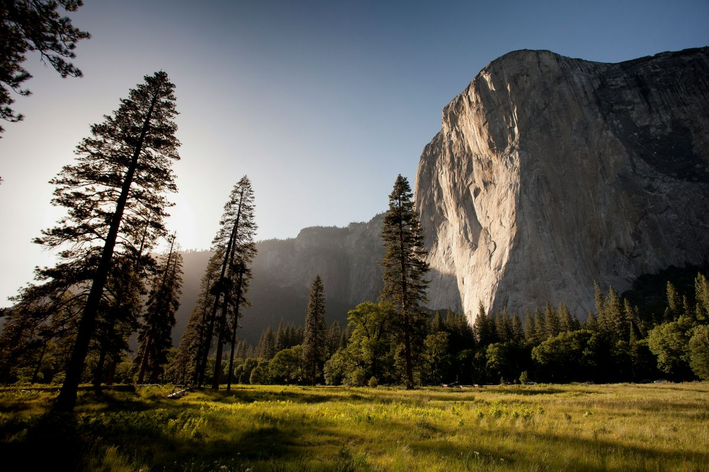
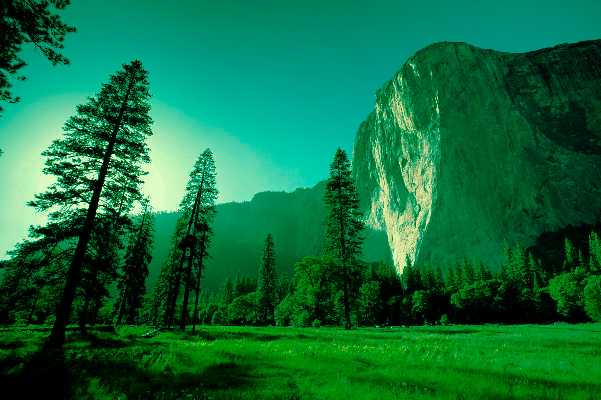

01. The Classic — Black & White Forest
This image demonstrates a black-and-white editing technique. The forest is originally vibrant to dull when all colors are removed.
WEB140 • Design Tools
Welcome to my Image Remix & Icon Challenge. Explore how different editing techniques can change the appearance and mood of an nature themed images.
Explore Nature ImagesImage Editing
Each image below demonstrates a different image-editing technique completed in Canva.
This image demonstrates a black-and-white editing technique. The forest is originally vibrant to dull when all colors are removed.
This image demonstrates an adjustment to color saturation. Increasing the saturation deepens the colors of the rainbow.
This image demonstrates an adjustment to contrast between light and dark areas. The dark areas of the mountain deepens when contrast increased.
This image demonstrates a monochromatic treatment using shades of green dominant color for the trees against the rock backdrop.


Font Awesome
These icons were selected from Font Awesome and customized using CSS.
Capture the unique bond between the artist and the outdoors.
Nature represents patience and calm.
Nature clears your mind and sparks creativity.
Click below for more information.
Get in Touch
Business phone number: 805-999-9393.